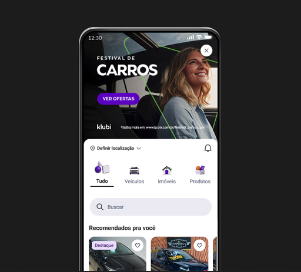

OLX · Product Design
Redesign
2026
A full redesign of the OLX marketplace — rethinking navigation, discovery and trust signals to serve millions of users across Brazil with a faster, more intuitive experience.

An experience built for
another era
OLX's product had grown organically over a decade, accumulating layers of navigation patterns and visual inconsistencies. Users struggled to find what they were looking for, and trust metrics were declining across key transactional flows.
Listening before designing
We ran 42 user interviews across 6 Brazilian cities, combined with heatmap analysis and funnel diagnostics. The core insight: users trusted the platform but felt the interface was working against them — not with them.
A system built for clarity
We rebuilt the design language from the ground up — a new component library, a clearer information hierarchy, and trust-signal patterns that guide users confidently through discovery to transaction.
Prototype walkthrough
Drag left or right to compare
Results that matter
Measured across a 90-day post-launch window with over 3 million active users.
+0%
Task completion rate across core flows
−0%
Drop-off in the listing creation flow
0
Users impacted on day one of launch
+0 pts
NPS improvement post redesign